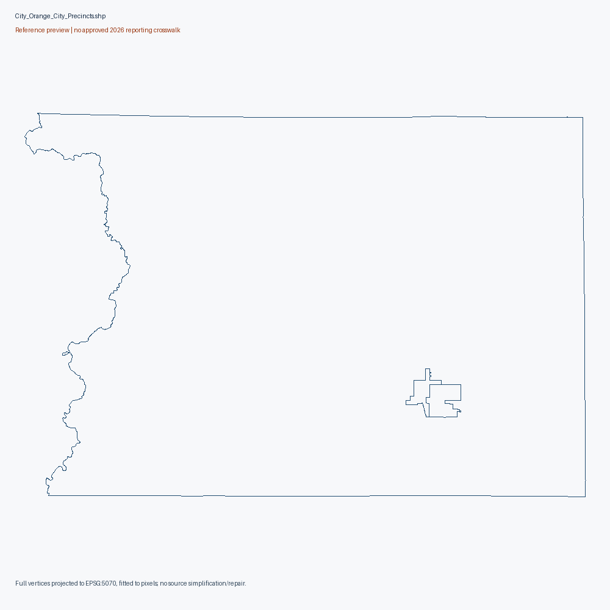
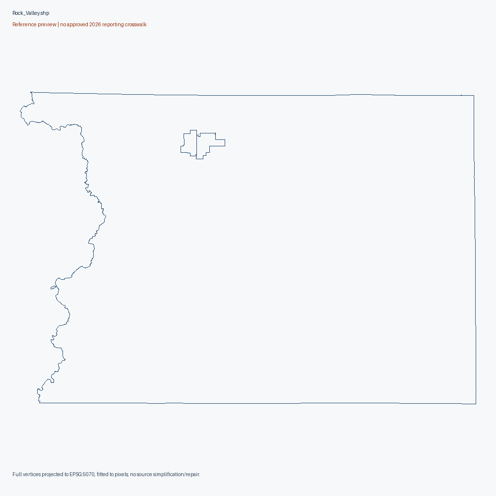
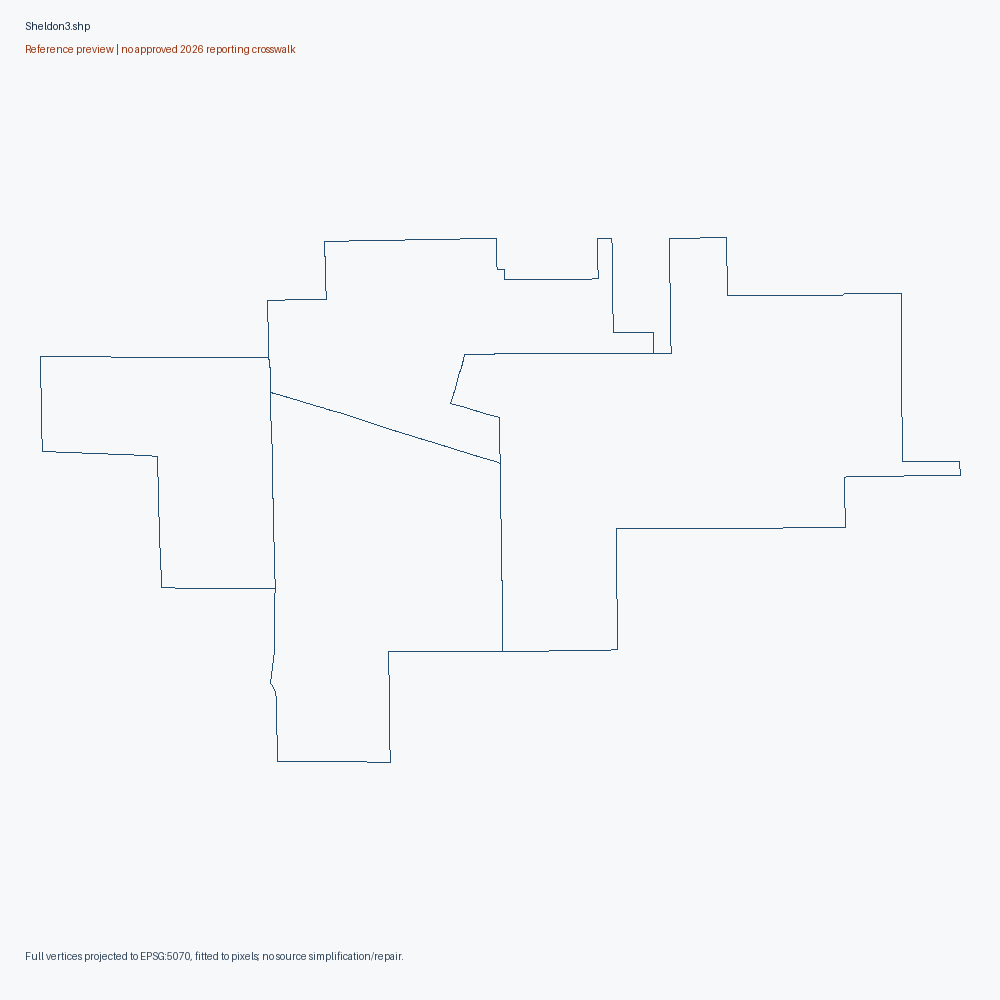
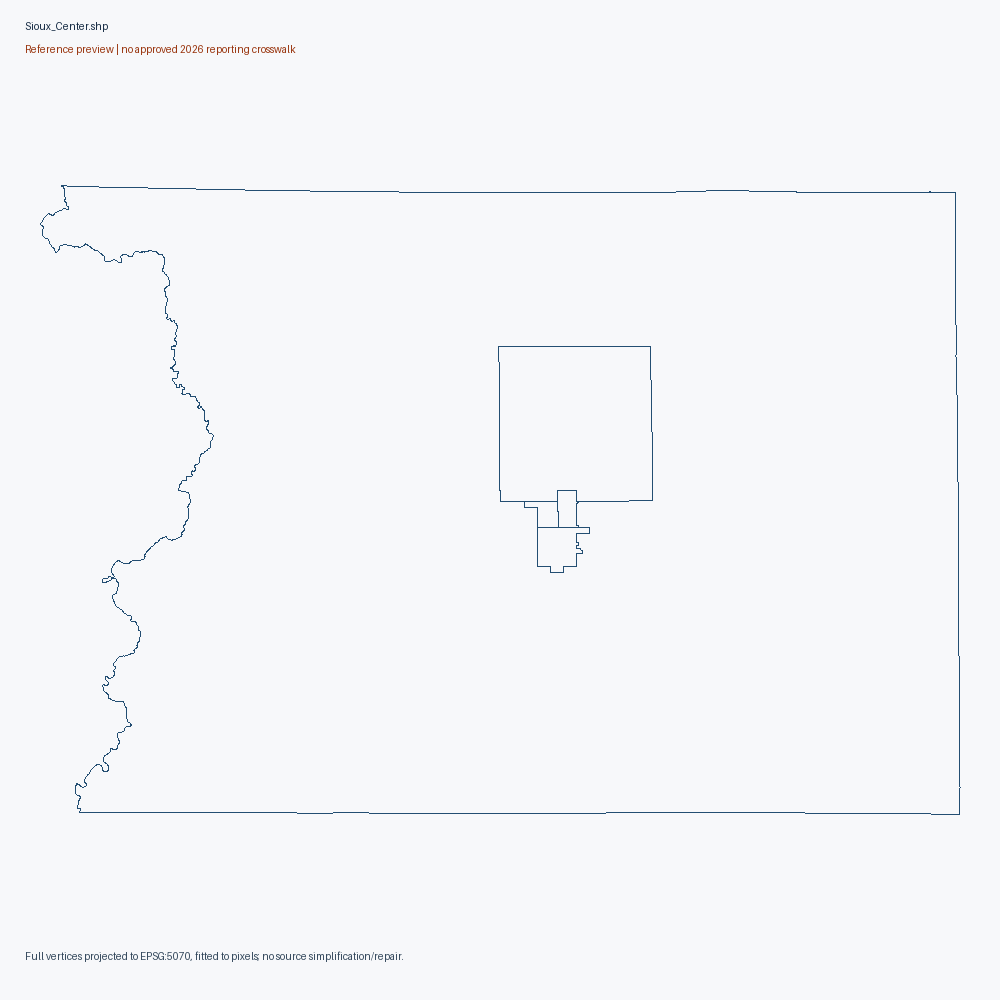
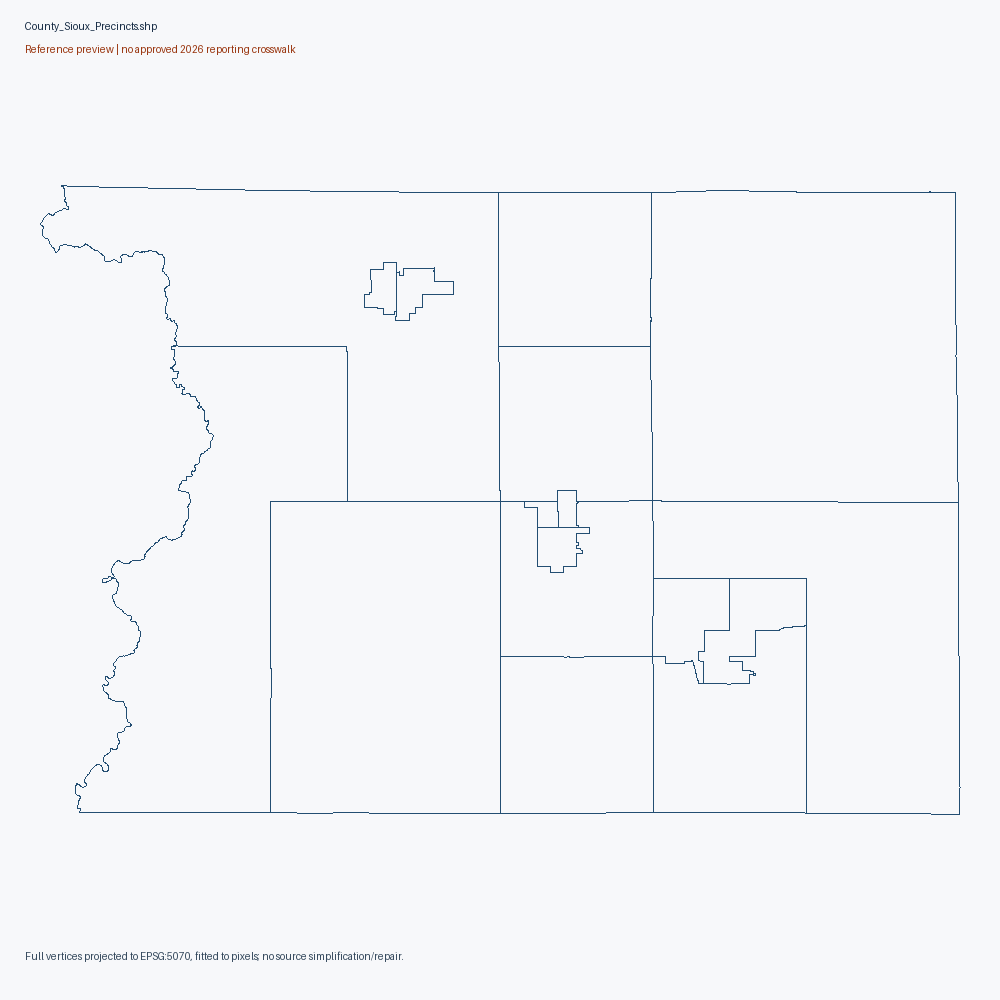

All counties
18. Sioux County
Reference maps. No approved November 2026 reporting-unit crosswalk.
Source-native units remain unlocated until documentary crosswalk; aggregate/unassigned city areas and partial city files retained separately.
Exact source-native diagnostics (gzip JSON)
Orange City Precinct Boundaries.zip
partial city reference, not countywide geometry
Source aggregate/unassigned labels retained, not individual precincts: ['Unassigned']
Original source download Primary sourcereprecincting-era SOS collection; source-specific legal effective date unknown
3 native records; 4986 vertices. Full native attributes/vertices

Rock Valley Precinct Boundaries.zip
partial city reference, not countywide geometry
Source aggregate/unassigned labels retained, not individual precincts: ['Unassigned']
Original source download Primary sourcereprecincting-era SOS collection; source-specific legal effective date unknown
3 native records; 4730 vertices. Full native attributes/vertices

Sheldon Precinct Boundaries.zip
partial city reference, not countywide geometry
Municipality may span counties. Association is navigation only; original extent not clipped or allocated.
Original source download Primary sourcereprecincting-era SOS collection; source-specific legal effective date unknown
4 native records; 466 vertices. Full native attributes/vertices

Sioux Center Precinct Boundaries.zip
partial city reference, not countywide geometry
Source aggregate/unassigned labels retained, not individual precincts: ['Unassigned']
Original source download Primary sourcereprecincting-era SOS collection; source-specific legal effective date unknown
5 native records; 5308 vertices. Full native attributes/vertices

Sioux County Precinct Boundaries.zip
reference geometry; current 2026 equivalence unapproved
Original source download Primary source2021/2022 reprecincting-era source publication; individual adoption/effective date unverified
17 native records; 8948 vertices. Full native attributes/vertices

Historical source scopes
{
"2024/candidate_reporting_units": 17,
"2024/candidate_administrative_controls": 1,
"2024/registration_statistics_units": 17,
"2024/turnout_context_units": 17,
"2024/status_context_units": 17,
"2022/candidate_reporting_units": 17,
"2022/candidate_administrative_controls": 1,
"2022/registration_statistics_units": 17,
"2020/candidate_reporting_units": 16,
"2020/candidate_administrative_controls": 1,
"2020/registration_statistics_units": 16
}